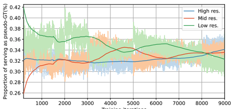

|
Chung-Ho (Kenneth) Wu, 吳中赫 I am currently pursuing my Master's degree at National Yang Ming Chiao Tung University (It was called National Chiao Tung University before), majoring Multimedia Engineering in Institute of Multimedia Engineering, and advised by Prof. Yu-Lun, Liu at CompPhoto Lab. I earned my bachelor's degree in Computer Science in National Yang Ming Chiao Tung University in 2023.
latest update: 2023-12-07 |

|
PublicationsI'm interested in computer vision, machine learning, image processing, XR, robotics topics. Currently, Most of my research is about novel view synthesis. |
|

|
FrugalNeRF: Fast Convergence for Few-shot Novel View Synthesis without Learned Priors
Ching-Yang Lin, Chung-Ho Wu, Changhan Yeh, Alex Yen, Cheng Sun, Yu-Lun Liu Under Review project page / arXiv / (under reconstruction) Utilizing self-guided adaptation of multi-scale voxel grid acheives fast convergence from sparse inputs. |
Projects |

|
Under The Lake: VR Horror Immersive Experience
NYCU CSIC30006: XR Camp (XR Showcase Silver Award) 2023-06-26 video / VR horror immersive experience on scene captured from real campus. |
|
Design and source code from Jon Barron's website. |